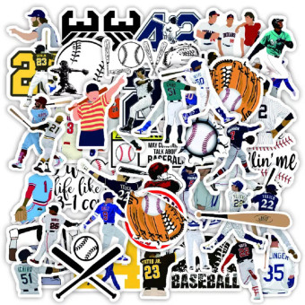
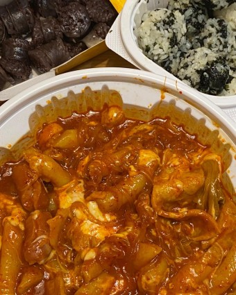
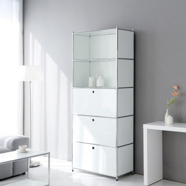
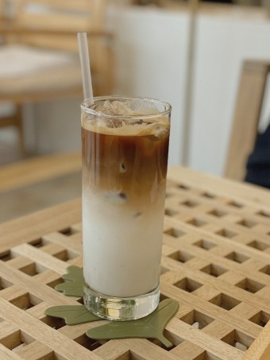

 예쁜 스티커들
why? 다이어리 꾸미기를 취미로 하기 때문에 예쁜 스티커들을 수집하는 것을 좋아합니다.
 엽기떡볶이
why? 원래 제일 좋아하는 음식이 떡볶이인데, 많은 떡볶이 브랜드 중에서도 엽기떡볶이의 떡볶이를 제일 좋아합니다.
 새 가구 냄새
why? 침대나 책상 같은 새로운 가구가 방에 들여졌을 때 나는 냄새를 좋아합니다. 새로운 곳에 온 설렘도 같이 느껴지는 기분이 듭니다.
 아이스 바닐라 라떼
why? 달달한 것을 좋아하고, 커피도 좋아하기 때문에 그 두 개가 합쳐진 아이스 바닐라 라떼를 매일 마실 정도로 좋아합니다.
축구선수 이강인
why? 얼마 전 월드컵 시즌에 이강인 선수를 보고 너무 잘하고 얼굴도 귀엽게 생겨서 입덕하게 되었습니다.
공항
why? 공항에 가면 느껴지는 여행가는 사람들의 설렘과 그 분주한 분위기가 좋습니다.